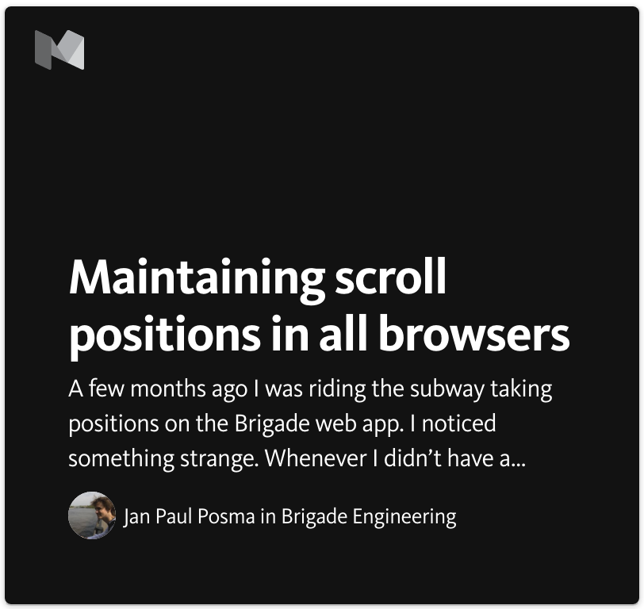

Maintaining scroll positions in all browsers
A few months ago I was riding the subway taking positions on the Brigade web app. I noticed something strange. Whenever I didn’t have a strong opinion I checked out the reasons people had left to inform myself. Then I would use the back button to take positions again, only to have to scroll down all the way to where I was before. That was a bad experience—I had to do a lot of scrolling—especially since I like to take a lot of positions!
Now, I had done the same thing in Chrome on my MacBook before, and I never noticed this problem. When I got home, I verified this, and indeed, it worked fine on my laptop—it scrolled back to my last taken position. Then I tried out other browsers on my laptop, such as Firefox and Safari, and aha! Those browsers had the same problem as my iPhone. I found it so annoying that I started investigating.
It turns out that all browsers restore the scroll position when clicking the back button, right after the page has loaded. However, with single page applications like ours, a page load typically doesn’t mean all content on the page is available; we first need to make some AJAX requests before we can render things. So for traditional websites most browsers work fine, but for newer web apps navigating around can suck—except in Chrome.
Existing solutions
After digging through the Chrome source code, I found the piece of code responsible for restoring the scroll position. It turns out that Chrome uses some sophisticated logic to determine when to restore the scroll position, which looks at if network requests have completed, if the size of the page has changed since last looking at it, if the user has already scrolled, and so on. A personal highlight is the variable canRestoreWithoutAnnoyingUser.
It turns out that this is such a debated topic in the react-router community, that they even split out a separate repo for different scroll behaviours.
Looking at how other people solve this problem, I found that our navigation library at the time, pjax, had functionality for caching page content when navigating away, so that pages can be immediately restored when navigating back. However, it assumed having static content, and didn’t seem to play well with React, which we use for our rendering, as React components would lose their state.
We were considering switching to react-router (which we have now done), so I looked if they had a better solution. It turns out that this is such a debated topic in the react-router community, that they even split out a separate repo for different scroll behaviours. Unfortunately, none of them supported waiting for the content to be rendered, like Chrome did.
Writing our own polyfill
So I decided to write my own solution. I really liked Chrome’s behaviour, so I wanted to write a polyfill that would emulate it as closely as possible. A key part of Chrome’s algorithm was to wait until the page becomes large enough to actually be able to scroll to previous position again, and that seemed easy enough to implement. Instead of waiting for network requests to finish, I simply checked the page width and height every few milliseconds, and that seemed to work well enough. Then, when it would be possible to scroll, do it. With manual testing of scroll values, that seemed to work pretty well.
The next question is, where to scroll to? Our application uses the History API for all page navigation, so I decided not to worry about full page loads. It turns out that you can store information whenever calling pushState or replaceState, so I modified both functions to store the scroll position whenever calling them. Combining that with restoring the scroll position when popState is called, and it already comes pretty close to Chrome’s behaviour!
Interestingly, people have argued that this is a bug in the spec, and in fact Chrome has deliberately implemented this differently.
Those modifications worked well for navigating to new pages, but not so much for pressing “back” and then “forward” again, because we didn’t save the scroll position from before clicking the “back” button. So I wanted to also store the scroll position when popState was fired, because that means that the browser navigates to another place. However, it turns out that’s not so easy, because the spec states that the scroll position should be restored before firing popState, so we would not be able to determine the actual scroll position. Interestingly, people have argued that this is a bug in the spec, and in fact Chrome has deliberately implemented this differently. So I had to do without scroll restoration when pressing the “forward” button.
Another deviation from Chrome’s behaviour, is that it doesn’t attempt to restore the scroll position if the user has already scrolled. Unfortunately, in Javascript-land there is no way for us to tell if a scroll was initiated by the user, or by the browser’s scroll restoration algorithm (which, as we just learned, is even inconsistent across browsers, so it’s hard to make assumptions about it). Luckily, both this problem and the popState problem will likely be fixed by the Custom Scroll Restoration Proposal, a new API that allows Javascript developers to disable the browser’s scroll behaviour altogether. It has already been shipped in—you guessed it—Google Chrome. Hopefully other browser vendors will follow suit soon.
Anyway, we’ve had this polyfill enabled on Brigade’s production web app for a few months now without any problems, so we decided to make it open source. If you have similar scrolling issues with your web app, just install the delayed-scroll-restoration-polyfill. And, as always, we welcome all feedback!